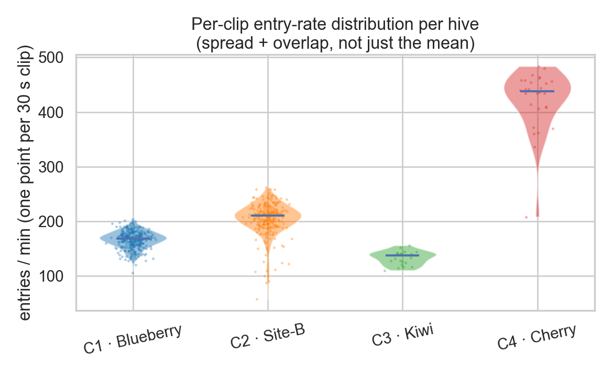
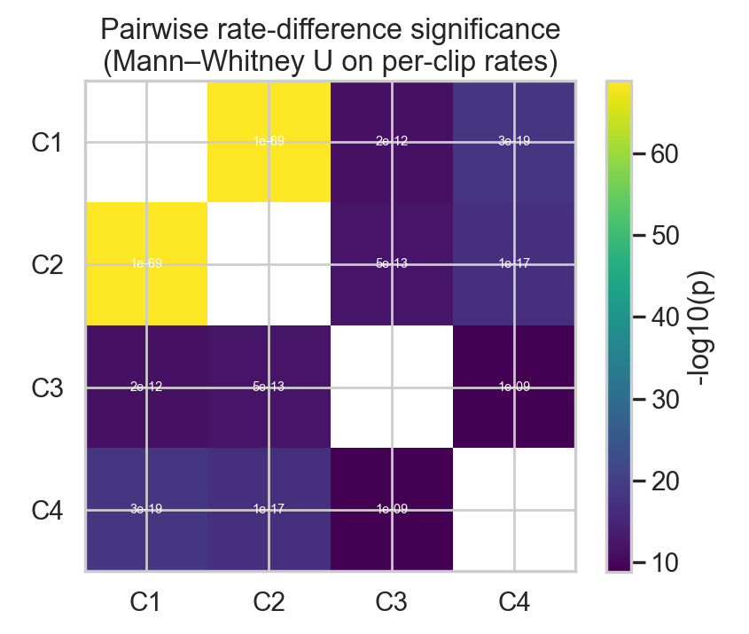
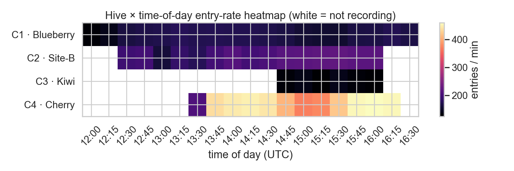
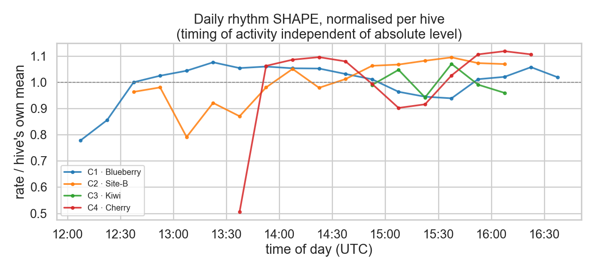
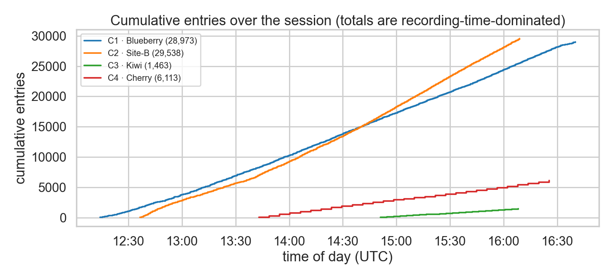
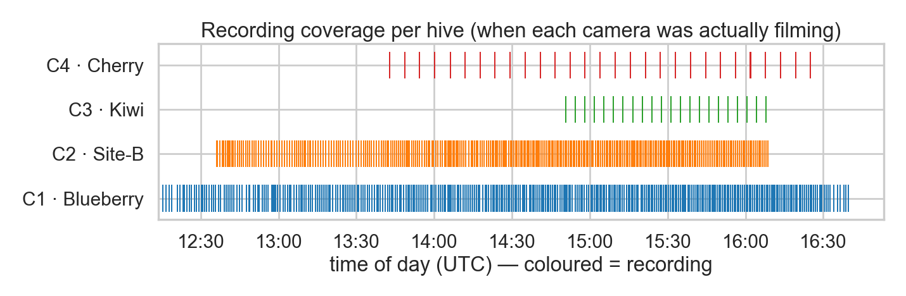

Hive entry rate ± 95% CI
Mean entries/min per hive with bootstrap confidence intervals.
Why pick it: Directly answers 'do hives differ?'. CIs show the difference is real (tight for C1/C2).

Per-clip rate distribution
Violin + every 30 s clip as a point.
Why pick it: Shows the full spread and how little the hives overlap — richer than a bar.

Rate in the common time window
Same comparison but only the window where ALL hives filmed at once.
Why pick it: Removes the time-of-day confound — the fairest like-for-like hive comparison.

Pairwise significance matrix
Mann–Whitney U p-value for every hive pair.
Why pick it: Quantifies 'are the differences statistically real' in one glance.

Activity over the afternoon
Entries/min in 15-min bins per hive, peak labelled.
Why pick it: Answers the temporal half: when each hive peaks, daily build-up.

Hive × time heatmap
Compact rate grid; white = not recording.
Why pick it: Same temporal story, denser; good if you want one compact panel.

Normalised daily rhythm
Each hive's rate ÷ its own mean.
Why pick it: Compares the SHAPE/timing of activity independent of absolute level.

Cumulative entries
Running total per hive over the session.
Why pick it: Conveys volume, but is recording-time-dominated — keep the caveat.

Where bees enter
2-D entry-location density over each entrance image.
Why pick it: A different question entirely: which part of the slot bees use — visually striking.

Recording coverage
When each camera was actually filming.
Why pick it: Essential context: explains why totals differ and why #3 matters.